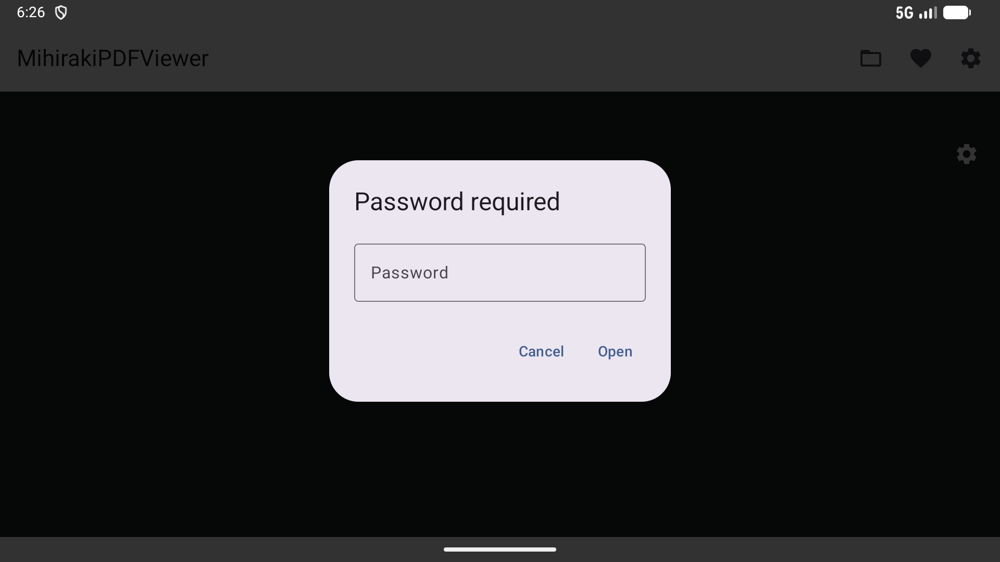
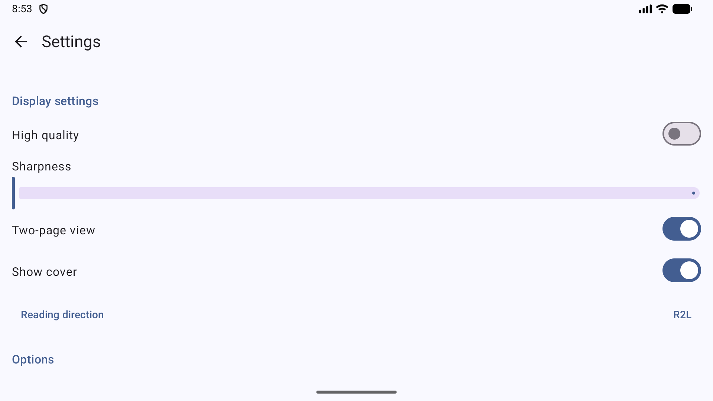

📱 Capturas de tela





Um visualizador de PDF moderno optimizado para páginas duplas e leitura R2L no Android
Visualize duas páginas lado a lado. Perfeito para layouts imersivos de mangás e livros de arte.
Suporte completo para a ordem de leitura da direita para a esquerda, incluindo barras de rolagem invertidas e gestos de deslizamento intuitivos.
Detecta automaticamente o layout da página e a direção da leitura a partir dos metadados do PDF para uma experiência sem configurações.
Busca rápida de text com destaque preciso dos resultados (fundo amarelo e borda vermelha) nos documentos.


Experimente o aplicativo com estes arquivos PDF de exemplo:
51 PDFs em 14 idiomas e 17 variantes de idioma/região, com três episódios cada. Espanha/América Latina, Brasil/Portugal e Taiwan/Hong Kong têm filtros separados. A edição de Hong Kong usa chinês escrito padrão, não cantonês coloquial. O tamanho e SHA-256 são verificados; os PDFs antigos são preservados.
"O Clube dos Testes" Episódios 1 e 2
© 2026 Komairo Hiyori
Partes desta obra para as quais o editor detém direitos autorais e outros direitos licenciáveis são fornecidas sob a licença Creative Commons Atribuição 4.0 Internacional (CC BY 4.0).
https://creativecommons.org/licenses/by/4.0/
Ao reutilizar esta obra, exiba o título, o nome do autor "Komairo Hiyori", a fonte da obra original e um link para a licença, e indique claramente se foram feitas alterações.
Esta obra utiliza IA generativa para a criação de texto, imagens e tradução. Materiais cujos direitos pertencem a terceiros, como fontes, estão sujeitos às suas respectivas licenças. Este aviso não restringe o uso de partes da obra que não sejam protegidas by copyright ou direitos semelhantes.
O MihirakiPDFViewer foi projetado com a privacidade em seu núcleo.
Os PDFs são processados no seu dispositivo. Downloads de exemplos, serviços de nuvem, verificações de atualização e compras opcionais de apoio usam conexões de rede.
Gratuito e sem anúncios
O aplicativo é totalmente gratuito para usar. Todos os recursos principais, como visualização de PDF, páginas duplas e busca, estão disponíveis sem quaisquer restrições, independentemente de compra.
*Contribuições opcionais no aplicativo estão disponíveis para apoiar o desenvolvedor. Os apoiadores verão um selo comemorativo especial na tela de Configurações.
Os PDFs de exemplo mostram primeiro o episódio mais recente. Você pode mudar para começar pelo episódio 1. A ordem é salva e também se aplica ao filtrar por idioma.
Os vídeos estão em inglês e abrem no YouTube.